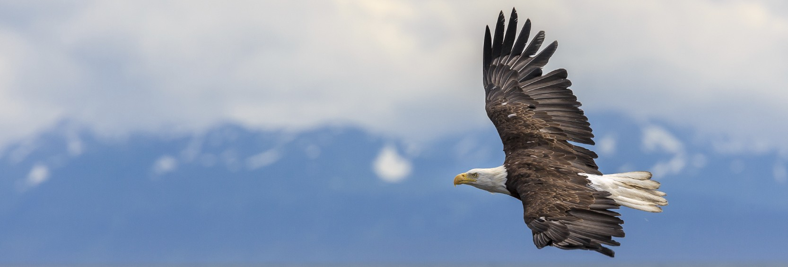

VR Locomotion
Idea 1 : Gliding like an Eagle

Why :
Who never dream to fly like a bird? But flapping wings must be so tiring… The solution? Gliding of course!
How :
Each arm will of course represent a wing, so the controllers will give the etremity of each wings, and their orientation represent the wing orientation. So pointing the controller forward represent a “flat” wing, which is the most common position, and you can then decide to point up or down for rotate your wings.
The player starts with an initial velocity, and should keep a minimal speed and a correct wing orientation to get enough lift to stay in the air.
Changing both wings on the “up” direction makes you go up in the air (obviously), but also makes you lost some velocity. Similarly you can go down, in which case you will gain speed.
To turn left (for example), as a real bird, you need to put your left wing lower, and your right wing higgher, and then slowly go up and rotate your arms to match rotation.
Turning arms to fast will lead to a decceleration. In a monre general way, not having the wings matching your actual velocity will make you slow down. The velocity direction must then be displayed. It could be simply displayed as a vector in front of you, or you could use some particules in the air to gives information in a more subbtle way.
You could also decide to dive by looking down and fold back your wings. You will then gain a lot of speed, but take care of the ground! In general fold back wings will reduce friction with air, but also reduce your wings lift.
One thing that we could add to this locomotion technique is some hot air stream in the world, so that the player could gain some altitude without slowing down (this is actually how the vultures or eagles are able to fly without flapping wings for a long time).
+/- :
+ Probably few motion sickness because the ground is quite far, and there is not so much acceleration.
+ The camera turns only when you turn your head
+ Should be satisfying when you handle it well
+ Quite realistic
- Not easy to learn
- Change the orientation of only one wings doesn’t makes you roll (it will certainly be horrible to play)
- Keeping arms straight could be tiring and not very natural
- You will probably looks ridiculous from the outside, but I guess it’s the case for everything in VR…
Idea 2 : Row in a kayak
Why :
Kayak is a palindrome, and it’s also a pretty fun sport.
How :
The player will hold a double ended paddle in the game. The center of the paddle is put between your hands, and its orientation is made to match your both hands location. And then you obviously need to do some paddle stroke in the water to move forward.
As with a real kayak, you need to take care of alternate left and right to move straight, and you can also let paddle in the water to slow down or turn.
+/- :
+ Easy to learn
+ Quite realistic
+ Few motion sickness (as long as you aren’t going too fast)
- You don’t feel any feedback force from the water
- Because there is no length constraint between controllers, your hands will slide on the paddle.
Idea 3 : Moving the world
Why :
There’s actually no difference (in a game) between moving yourself and moving the all world except you. So why not try to move what is arround you to move yourself?
How :
First the player should select a point in the world, using ray casting. When this point is locked (by holding the trigger down), the player can move this point and the entire world with it. The choosen point will stay at fixed distance of the player, but by moving the controller you can move the point (and the entire world) around you.
This method could have differents variations, for example we can use or not collision detection when moving the world. And using collisions, we can also decide to use gravity or not for the player.
+/- :
+ Easy to learn
+ Probably few motion sickness when using collisions and without gravity
- Getting to a precise point should be quite hard (but it could be a fun gameplay as well)
- Not natural